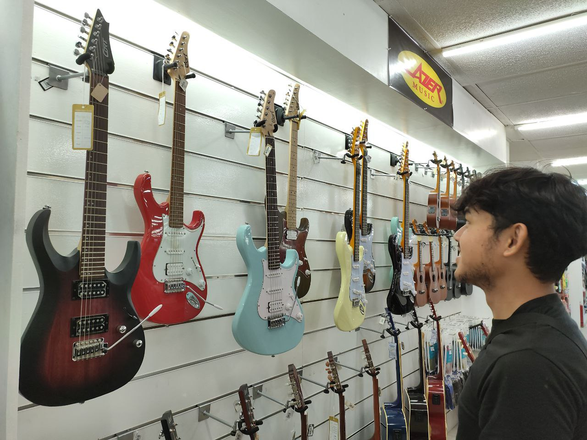
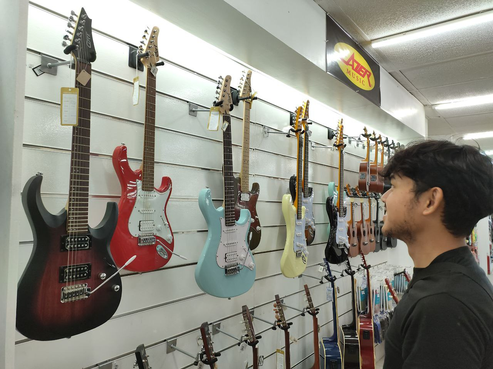

Axl Kenji M. Garcia
BSIS 3-B

 
About Me
I'm Axl Kenji M. Garcia, 20 years old, currently studying at
Davao del Norte State College, taking the course Bachelor
of Science in Information System.
I have a great passion for graphic designer and video editing.
I love to learn more skills from the challenges I am facing.
My current hobby is photography and playing guitar.
The images our some of my photography:
Blog
My Reflection on My Web Development Journey in BSIS
Studying web development in my BSIS course has
been an exciting learning experience. I started with very
little knowledge about how websites and online systems work,
but through my classes, I’ve learned important skills like HTML,
CSS, and JavaScript. The hands-on projects and assignments helped
me understand how all these technologies come together to make things
function properly, and it’s been great to see my progress over time.
However, the journey hasn’t been easy. One of the
hardest parts was learning JavaScript. I struggled at first
with understanding how the code worked, and debugging was
frustrating. But by practicing more and asking for help when I needed
it, I slowly started to get the hang of it. Another challenge was
keeping up with new technologies,but the course has taught
me how to keep learning and adapting to new things.
Overall, the BSIS program has helped me grow a lot in
web development. I’ve learned not only how to code but also
how to think about what users need and how to make websites
that are easy to use. This experience has made me more confident
in my skills, and I’m excited to keep learning and
improving as I move forward in my career.
Contact
09272935806